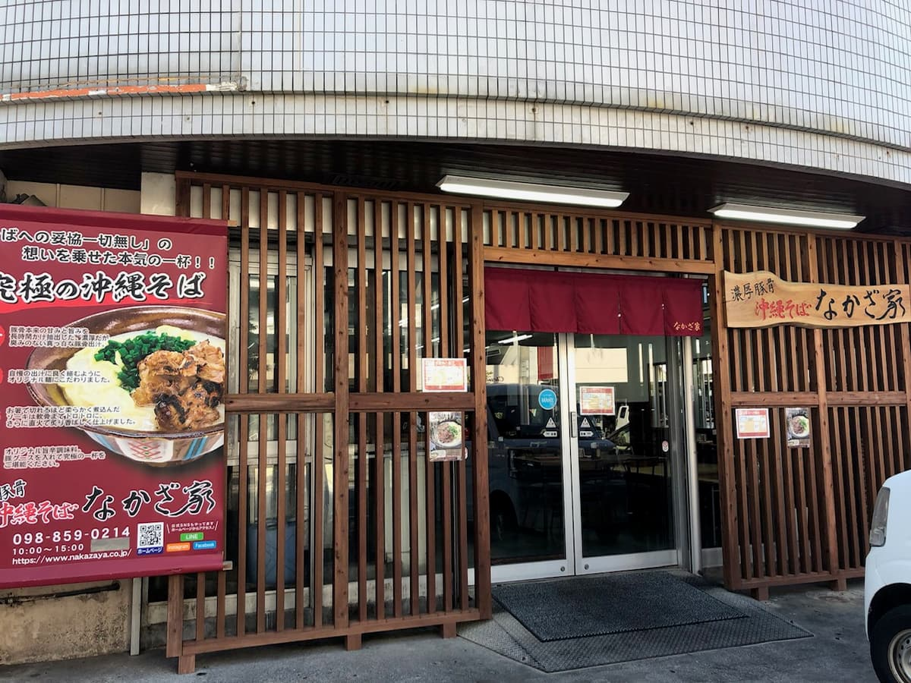
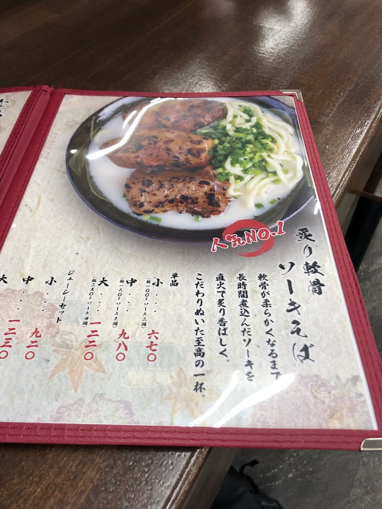
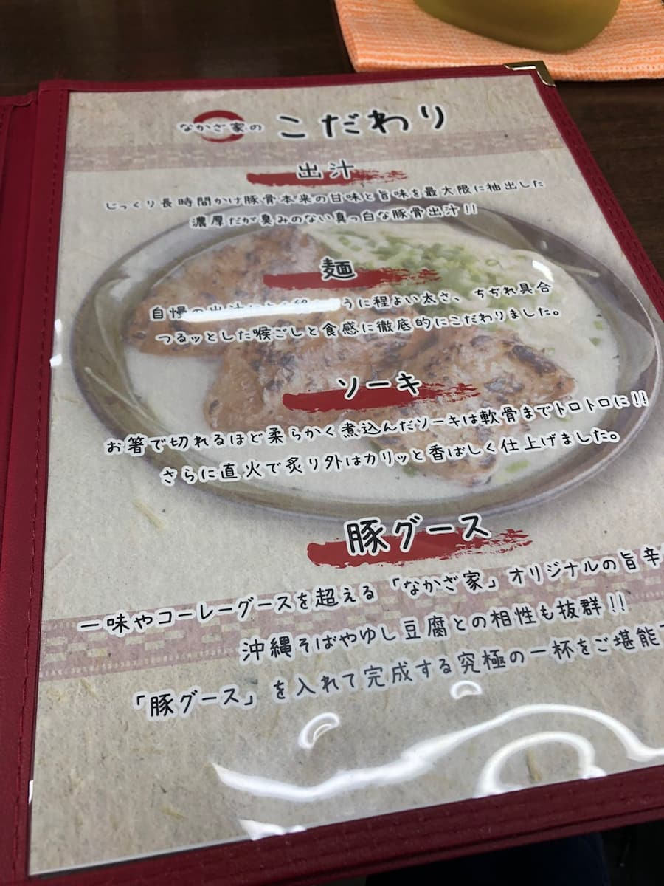
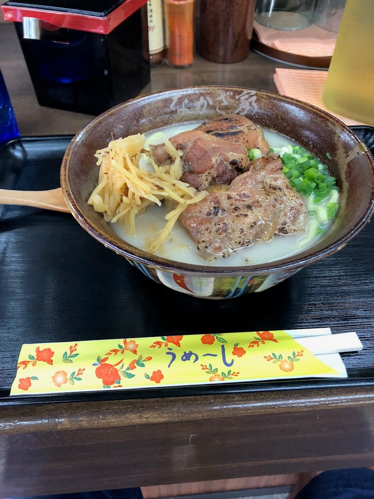

2022년 12월에 갔습니다😄

메뉴판을 보고 인기 No.1으로 소개되어 있던 “구운 연골 돼지갈비 소바”를 주문😁



하얀 국물은 임팩트가 있네요 ㅋㅋ 게다가 붉은 생강이 아니라 흰 생강도 다른 가게에는 없어요. 국물을 한 모금. 겉보기에는 진해 보이지만 의외로 담백해요. 면은 쫄깃한 중간 가는 면, 구운 연골 돼지갈비는 맛이 배어 있어서 맛있어요😋
절반쯤 먹은 뒤에 기대하고 있던 “돼지구스”를 넣어 맛을 바꿨어요.
담백한 국물이 감칠맛 나는 매운맛으로 바뀌어 맛이 올라갔어요.
평가(9점/15점): 개인적으로는 그대로의 국물은 너무 담백해서 “돼지구스”를 넣는 편이 더 맛있었어요. 돼지구스를 전제로 한 국물 구성인가 싶었어요. 하얀 국물은 다른 가게에는 없으니 꼭 이곳도 시도해 보세요😄
면: ★★★☆☆（3）
수프: ★★★☆☆（3）
토핑: ★★★☆☆（3）